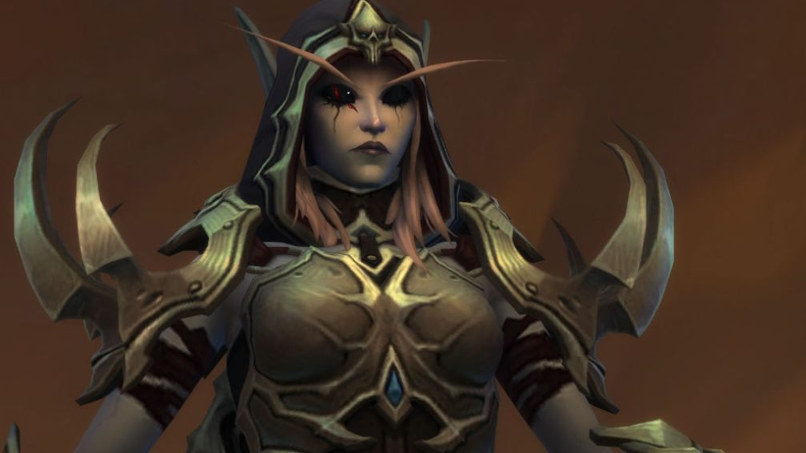
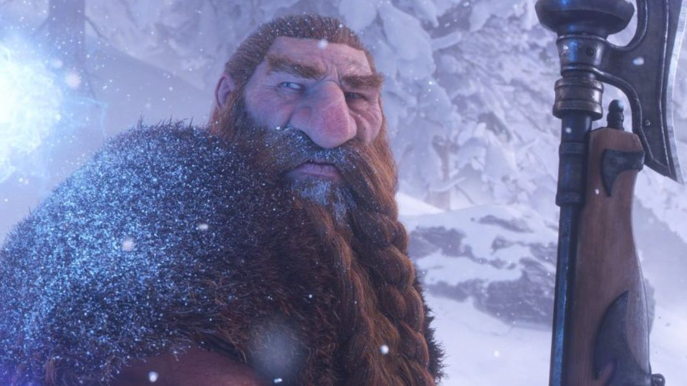

WoW Forever : le récap avant le lancement
26 octobre 2026
Annoncé à la BlizzCon 2026, World of Warcraft: Forever est le « Classic+ » attendu depuis des années. Voici l'essentiel.
📅 Mise à jour le 14 novembre 2026🛠 Patch 1.60.1.70938

Un troisième WoW, à côté du moderne et de Classic
Forever ne remplace ni le WoW actuel ni Classic : c'est un jeu à part, avec ses propres personnages et sa propre continuité, séparée de l'histoire du WoW moderne. L'action se déroule pendant la première année du jeu, avant le Cœur du Magma.

Le niveau 60, pour toujours
Pas d'extension qui monte le niveau max : la progression se fait « à l'horizontale », avec de nouvelles zones, donjons et raids au niveau 60, sans rendre votre équipement obsolète.
Ce qui change
- Nouvelle race elfique : les Skyborne, avec leur zone de départ sur l'île de Zephras (niveaux 1 à 12).
- Nouvelles zones : Mont Hyjal, Riverglades, Shen'dralas et l'île de Zephras.
- Neuf nouveaux donjons à 5 joueurs et des raids calibrés pour 10 et 20 joueurs.
- Système Legacy de progression à l'échelle du compte et système de camping.
- Plus de 600 nouvelles recettes de métiers.
- Un monde sans royaumes, mais pas de groupes inter-factions.
- Pas de montures volantes ni de mise à l'échelle des niveaux.
- Un nouveau champ de bataille 15 contre 15 et une refonte du JcJ.

Combien ça coûte ?
Le jeu est inclus dans l'abonnement World of Warcraft. Seule la race Skyborne demande un pack optionnel (Skyborne Heroic Pack ou Epic Pack). La Warcraft Forever Collection, en édition limitée jusqu'au 11 janvier 2027, ajoute notamment Warcraft III: Reforged.